Chci s Vámi tvořit věci, na kterých záleží
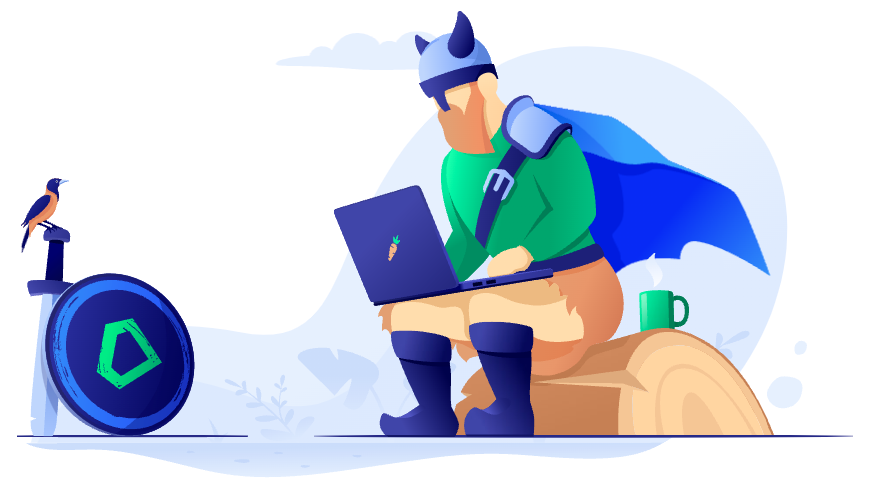
Kdo jsem
Proč právě já
"Skoro" portfolio
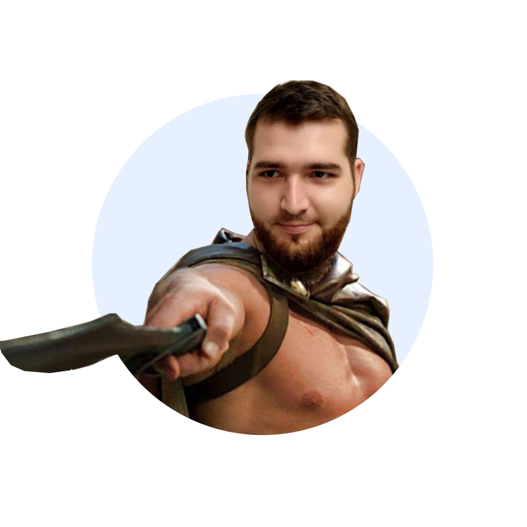
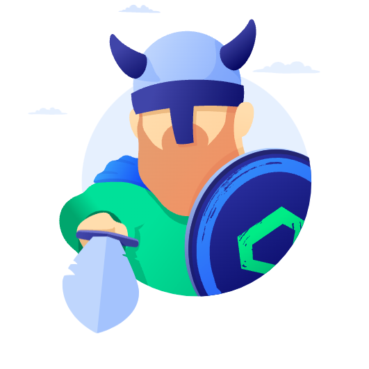
Co vše umím
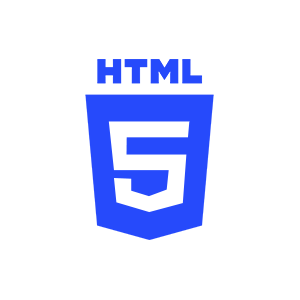
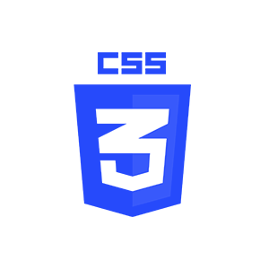
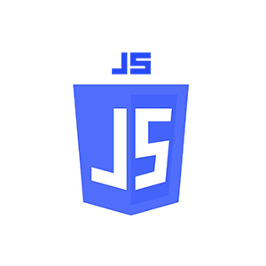
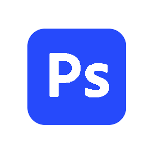
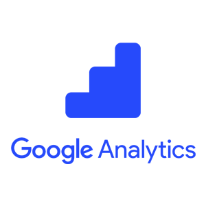
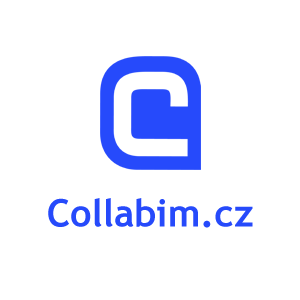
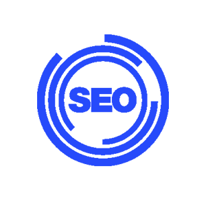
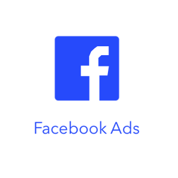
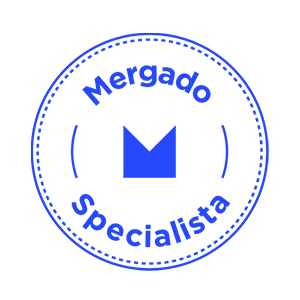
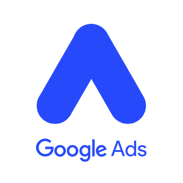
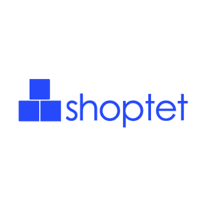
Portfolio
Na projektech jsem začal dělat začátkem dubna, takže nejsou úplně dotažené (omluv tedy prosím, nenasazení https a že některé odkazy nejsou proklikatelné). Avšak rozhodl jsem se je i tak nahrát, abych mohl demostrovat postupné zlepšování se a snad i z projektů bude vidět nadšení, s kterým je dělám.


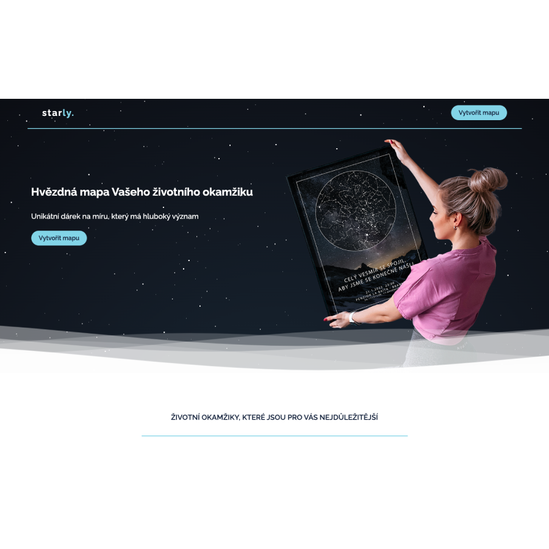
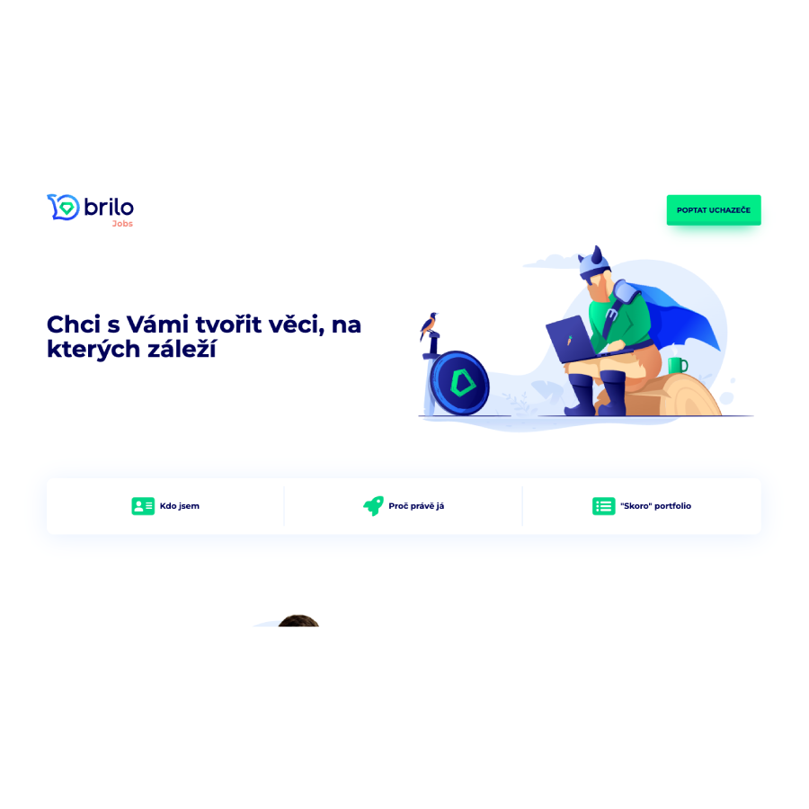